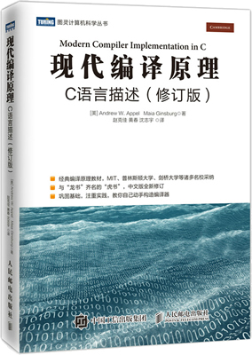

首页 > 书籍下载
《现代编译原理(C语言描述)》修订版PDF下载（高清完整版）
|  | 作者：[美]安德鲁 W.安佩尔（Andrew W.Appel）、马亚·金斯伯格（Maia Ginsburg） |
| 译者：赵克佳、黄春、沈志宇 | |
| 出版时间：2018-04-01 | |
| 出版社：人民邮电出版社 | |
| 书号ISBN：9787115476883 | |
| 总页数：385 |
这是一本非常经典的编译原理书籍，内容完整、全面，享有“虎书”的称号，和“龙书”《编译原理》齐名，很多大学把它作为课堂教材，适合有 C 语言基础，对程序编译过程感兴趣的读者。
这里提供的是《现代编译原理(C语言描述)》修订版的高清 PDF 下载，内容完整，附带目录标签。
这本书详细讲述了现代编译器的结构、编译算法和底层实现方法，还精心设计了一个用 C 语言编写的编译器项目，让读者在掌握编译理论的同时，通过实践加深对所学理论的理解。
下面是一位购买了这本书的读者给出的评价：
编译原理是每个程序员心中的圣地，这本书确实很适合新手，知识讲解到位，代码详细。
还有一位读者也给出了好评：编译原理是基础科学，这本书和龙书齐名很值得读一读，而且是用 C 语言实现的，书的内容很适合学生，里边讲了一些寄存器呀各种底层的东西，非常好。
书籍目录
- 第1章 绪论 1
- 1.1 模块与接口 1
- 1.2 工具和软件 3
- 1.3 树语言的数据结构 3
- 程序设计：直线式程序解释器 7
- 推荐阅读 8
- 习题 9
- 第2章 词法分析 10
- 2.1 词法单词 10
- 2.2 正则表达式 11
- 2.3 有限自动机 13
- 2.4 非确定有限自动机 15
- 2.5 Lex：词法分析器的生成器 20
- 程序设计：词法分析 22
- 推荐阅读 23
- 习题 23
- 第3章 语法分析 27
- 3.1 上下文无关文法 28
- 3.2 预测分析 32
- 3.3 LR分析 39
- 3.4 使用分析器的生成器 48
- 3.5 错误恢复 54
- 程序设计：语法分析 57
- 推荐阅读 58
- 习题 58
- 第4章 抽象语法 62
- 4.1 语义动作 62
- 4.2 抽象语法分析树 65
- 程序设计：抽象语法 71
- 推荐阅读 71
- 习题 72
- 第5章 语义分析 73
- 5.1 符号表 73
- 5.2 Tiger编译器的绑定 79
- 5.3 表达式的类型检查 82
- 5.4 声明的类型检查 84
- 程序设计：类型检查 86
- 习题 87
- 第6章 活动记录 89
- 6.1 栈帧 90
- 6.2 Tiger编译器的栈帧 96
- 程序设计：栈帧 102
- 推荐阅读 103
- 习题 103
- 第7章 翻译成中间代码 106
- 7.1 中间表示树 106
- 7.2 翻译为树中间语言 108
- 7.3 声明 120
- 程序设计：翻译成树 122
- 习题 123
- 第8章 基本块和轨迹 125
- 8.1 规范树 126
- 8.2 处理条件分支 131
- 推荐阅读 134
- 习题 134
- 第9章 指令选择 136
- 9.1 指令选择算法 138
- 9.2 CISC机器 144
- 9.3 Tiger编译器的指令选择 146
- 程序设计：指令选择 152
- 推荐阅读 153
- 习题 154
- 第10章 活跃分析 155
- 10.1 数据流方程的解 156
- 10.2 Tiger编译器的活跃分析 162
- 程序设计：构造流图 164
- 程序设计：活跃分析模块 165
- 习题 165
- 第11章 寄存器分配 166
- 11.1 通过简化进行着色 166
- 11.2 合并 168
- 11.3 预着色的结点 171
- 11.4 图着色的实现 175
- 11.5 针对树的寄存器分配 181
- 程序设计：图着色 184
- 推荐阅读 185
- 习题 185
- 第12章 整合为一体 188
- 程序设计：过程入口 出口 189
- 程序设计：创建一个可运行的编译器 191
- 第13章 垃圾收集 193
- 13.1 标记-清扫式收集 194
- 13.2 引用计数 197
- 13.3 复制式收集 198
- 13.4 分代收集 201
- 13.5 增量式收集 203
- 13.6 Baker算法 205
- 13.7 编译器接口 205
- 程序设计：描述字 208
- 程序设计：垃圾收集 208
- 推荐阅读 208
- 习题 210
- 第14章 面向对象的语言 211
- 14.1 类 211
- 14.2 数据域的单继承性 213
- 14.3 多继承 214
- 14.4 测试类成员关系 216
- 14.5 私有域和私有方法 218
- 14.6 无类语言 219
- 14.7 面向对象程序的优化 219
- 程序设计：OBJECT-Tiger 220
- 推荐阅读 220
- 习题 221
- 第15章 函数式程序设计语言 222
- 15.1 一个简单的函数式语言 222
- 15.2 闭包 224
- 15.3 不变的变量 225
- 15.4 内联扩展 229
- 15.5 闭包变换 233
- 15.6 高效的尾递归 235
- 15.7 懒惰计算 236
- 推荐阅读 243
- 程序设计：编译函数式语言 244
- 习题 244
- 第16章 多态类型 246
- 16.1 参数多态性 246
- 16.2 类型推论 253
- 16.3 多态变量的表示 259
- 16.4 静态重载的解决方法 265
- 推荐阅读 266
- 习题 266
- 第17章 数据流分析 269
- 17.1 流分析使用的中间表示 270
- 17.2 各种数据流分析 271
- 17.3 使用数据流分析结果的几种转换 274
- 17.4 加快数据流分析 276
- 17.5 别名分析 281
- 推荐阅读 285
- 习题 285
- 第18章 循环优化 287
- 18.1 必经结点 289
- 18.2 循环不变量计算 292
- 18.3 归纳变量 293
- 18.4 数组边界检查 297
- 18.5 循环展开 300
- 推荐阅读 301
- 习题 301
- 第19章 静态单赋值形式 303
- 19.1 转化为SSA形式 305
- 19.2 必经结点树的高效计算 310
- 19.3 使用SSA的优化算法 315
- 19.4 数组、指针和存储器 320
- 19.5 控制依赖图 321
- 19.6 从SSA形式转变回来 323
- 19.7 函数式中间形式 324
- 推荐阅读 327
- 习题 328
- 第20章 流水和调度 331
- 20.1 没有资源约束时的循环调度 332
- 20.2 有资源约束的循环流水 336
- 20.3 分支预测 341
- 推荐阅读 343
- 习题 343
- 第21章 存储层次 346
- 21.1 cache的组织结构 346
- 21.2 cache块对齐 349
- 21.3 预取 350
- 21.4 循环交换 354
- 21.5 分块 355
- 21.6 垃圾收集和存储层次 357
- 推荐阅读 358
- 习题 358
书籍下载
一键登录，免费下载完整版 PDF，文件名称：《现代编译原理(C语言描述)》修订版.pdf